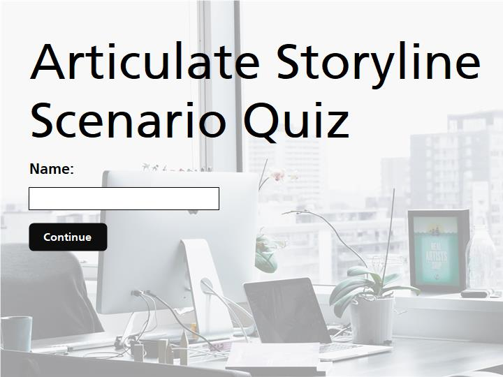
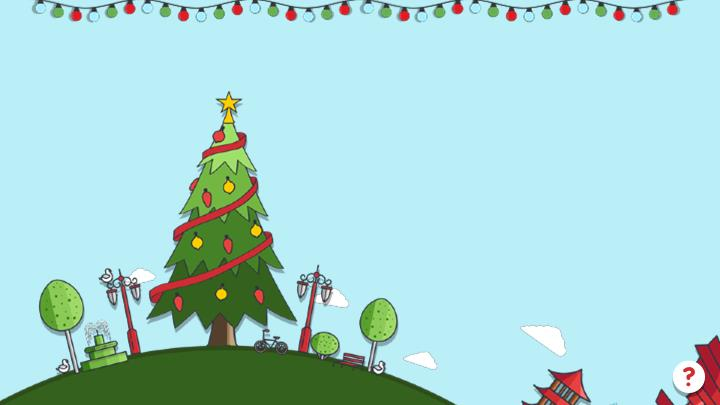
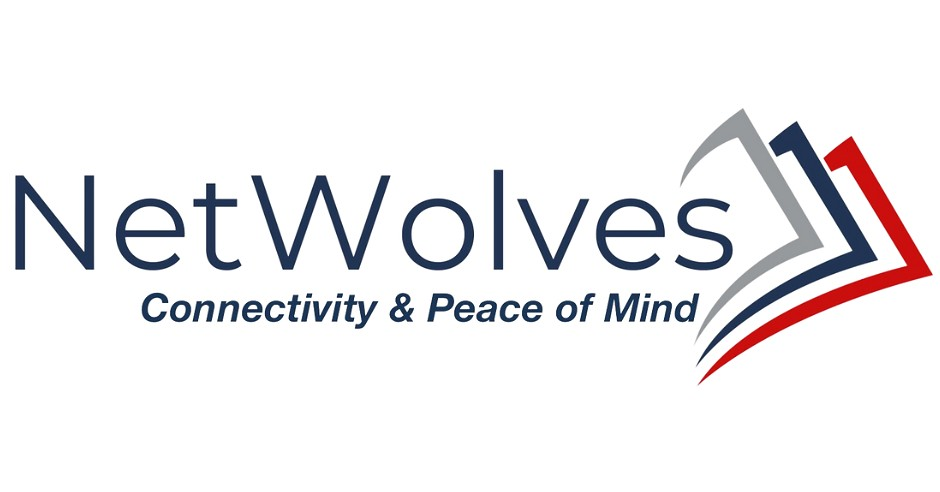

Diti Jay Shah
Instructional Designer& Learning Experience Designer
Educator, designer, lifelong learner
A Bit about Diti
Diti Jay Shah is a Learning and Development professional with experience in education, instructional design, and professional training since 2008. Her career spans higher education, corporate learning, and diverse educational settings, where she has designed and supported engaging learning experiences for adult learners.
Read more
Her areas of expertise include instructional design, adult learning, eLearning development, project management, and professional development. She is passionate about creating practical, learner-centered experiences that use technology thoughtfully to make learning meaningful, accessible, and engaging.
Professional Goals Statement
Finding inspiration in every turn.
As I approach graduation from the Master of Science in Instructional Design and Technology program at the University of Tampa, my professional goal is to pursue opportunities as an Instructional Designer, Learning Experience Designer, or Learning and Development Specialist in corporate training, higher education, or educational technology.
Corporate Training
Higher Education
Educational Technology
Read more
With a professional background spanning teaching, adult education, corporate learning, and instructional design since 2008, I bring a diverse perspective to creating meaningful learning experiences. My graduate studies have strengthened my expertise in instructional design, technology integration, multimedia development, assessment, and learner-centered approaches. I consider instructional planning, adult learning, and content development among my strongest competencies, while continuing to advance my skills in learning analytics, accessibility, and AI-supported learning.
My Professional Direction
My goal is to continue growing as an instructional designer and learning experience design professional, creating innovative, accessible, and evidence-informed learning solutions for educational institutions and organizations.
Education & credentials
Education Summary
- Current
M.S. Instructional Design & Technology
University of Tampa · Fall 2025 – Fall 2026 · 40 credit hours
- 2023
M.Ed. Adult Education & Community Development
Collaborative Specialization in Comparative, International, and Development Education · OISE, University of Toronto
- 2019
TESOL Certificate
University of Toronto
- 2013
Bachelor of Education (B.Ed.)
- 2008
M.A. English Literature
Gujarat University, India
- 2006
B.A. English Literature
Gujarat University, India
Read the full summary
She holds a Master of Education in Adult Education and Community Development with a collaborative specialization in Comparative, International, and Development Education from the Ontario Institute for Studies in Education, University of Toronto (2023). She is currently pursuing a Master of Science in Instructional Design and Technology at the University of Tampa. Diti also completed a Bachelor of Education (2013) and earned both a Master of Arts (2008) and a Bachelor of Arts (2006) in English Literature from Gujarat University, India. Additionally, she is certified in Teaching English to Speakers of Other Languages (TESOL) from the University of Toronto (2019).
Download Resume
View Diti's full resume online or download it as a Word document.
M.S. Instructional Design & Technology
The University of Tampa · Fall 2025 – Fall 2026. Twelve courses that took me from learning theory and research to systematic design, games and simulations, AI, change management and a field internship. I completed 40 credit hours, four more than the 36 the program requires.
Courses
At a Glance
| Course | Title | Instructor | Type | Credits | Work in this portfolio |
|---|---|---|---|---|---|
| Core 24 · Elective 16 · Internship 0 | 40 | ||||
Designing meaningful learning through innovation, technology & research
Throughout my degree program, I accomplished a variety of project tasks relating to project management, curriculum design, research, and more! I invite you to take a look at my work below to see how I have implemented my skillset to bring my ideas into reality.
eLearning Modules & Projects
Case Studies
The thinking behind the work: problem, learners, design decisions and results.
A Principal's First Year: Riverside Academy
EME 607 · Branching leadership simulation
A Principal's First Year: Riverside Academy
EME 607 · Branching leadership simulationA game-based simulation in which learners step into the role of a newly appointed principal at Riverside Secondary (850 students, Grades 6–12) and lead through a full school year: 4 missions and 20 branching scenes where every decision shifts four live measures: staff morale, engagement, academic performance and trust.
- Instructional problem
- New principals must build relational trust and make high-stakes decisions in their first weeks, yet rarely get a safe place to practice before facing real staff, parents and data. This simulation offers a risk-free rehearsal of those first-year moments.
- Target learners & context
- Aspiring and newly appointed school leaders. Works self-paced, or facilitated in a group using the built-in presenter mode with audience voting.
- My role
- Instructional designer and developer for EME 607: scenario writing, branching structure, research-based feedback and interface design.
- Scope
- Four missions across the school year: First Days (September), The Data Drop (November), Crisis Week (February) and The Final Push (May), with nine characters, mission debriefs and a completion certificate.
- Learning objectives
- Choose listening-first strategies that build relational trust with experienced staff.
- Present school data transparently and respond to staff concerns collaboratively.
- Select high-impact supports, such as observation and co-planning, for struggling first-year teachers.
- Respond personally and promptly to parent and community concerns.
- Reflect on how leadership decisions affect morale, engagement, achievement and trust.
- Design process & frameworks
- Scenario-based learning with three choices per scene and visible consequences. Andragogy: realistic, job-embedded problems for adult professionals. Gagné's events: a story hook gains attention, each choice gives practice with immediate feedback, and debriefs assess and support transfer. Every option's feedback cites what leadership research says about that move, and reflection prompts close each mission.
- Tools & technologies
- Interactive web simulation (HTML, CSS, JavaScript) built with generative AI support (Claude), including sound, keyboard shortcuts and presenter controls.
- Evaluation & results
- Built in: four live metrics, a decision log and leadership profile after each mission, and a final score with certificate. To add: instructor or peer feedback
- Reflection & lessons learned
- To add: 2–3 sentences on what you learned designing this simulation
Branched Scenario Quiz: Workplace Professionalism
Articulate Storyline · Scenario-based assessment
Branched Scenario Quiz: Workplace Professionalism
Articulate Storyline · Scenario-based assessment
A five-question scenario quiz that places learners in realistic workplace situations: an angry customer demanding a manager, an urgent task that collides with a deadline, a coworker's error in a client report, a complaint about incorrect information, and a project at risk of running late.
- Instructional problem
- Soft skills such as accountability, communication and customer empathy are hard to teach through content alone. Learners need to practice judgment and see the consequences of their choices.
- Target learners & context
- New and early-career employees in customer-facing or team-based roles, as part of onboarding or professional-skills training.
- My role
- To confirm: your role (for example, scenario writer and Storyline developer)
- Scope
- Eight slides, about 5 minutes: name entry, five scenario questions, and a results slide with pass/fail paths and a retry option.
- Learning objectives
- De-escalate an upset customer with empathy and ownership before deciding to escalate.
- Negotiate competing priorities with a manager instead of abandoning or ignoring work.
- Address a coworker's mistake privately and constructively.
- Take accountability for incorrect information given to a customer.
- Communicate deadline risks early and propose a revised plan.
- Design process & frameworks
- Each question offers one best response and two plausible distractors, so learners must apply and analyze rather than recall (Bloom). Every choice leads to consequence feedback explaining why, following Gagné's practice-and-feedback events. A personalized greeting, progress meter and score tracking keep learners oriented.
- Tools & technologies
- Articulate Storyline 360: variables, triggers, text entry, branching feedback layers and a results slide.
- Evaluation & results
- Built-in scoring (maximum 5, passing 2) with pass/fail feedback and retry. To add: learner or instructor feedback
- Reflection & lessons learned
- To add: what you learned building branching logic and writing distractors
Holiday Traditions of the World
Articulate Storyline · Narrated microlearning
Holiday Traditions of the World
Articulate Storyline · Narrated microlearning
An illustrated, narrated microlearning experience that takes learners on a swipe-through tour of celebrations around the world, from Germany and India to Mexico, Italy, Japan and the United States, with quick knowledge checks along the way.
- Instructional purpose
- Build cultural awareness and curiosity about global traditions in a short, engaging format that learners can complete on any device.
- Target learners & context
- Learners exploring cultural diversity, suitable for upper-elementary through adult audiences, in a self-paced setting.
- My role
- To confirm: your role
- Scope
- A single interactive scene with audio narration, swipe navigation and multiple knowledge checks.
- Learning objectives
- Match well-known festivals, such as Diwali and Oktoberfest, to the countries that celebrate them.
- Recall distinctive customs, such as Mexico's radish carvings and Italy's Epiphany Eve gift-giver.
- Describe how holiday traditions reflect each culture's values and history.
- Design process & frameworks
- Mayer's multimedia principles: narration paired with illustrations instead of on-screen text blocks. UDL: audio, visuals and touch-friendly swipe gestures offer multiple means of engagement. Immediate "Try again" feedback lets learners correct mistakes as they go.
- Tools & technologies
- Articulate Storyline 360, audio narration, illustrated assets and mobile swipe gestures.
- Evaluation & results
- Knowledge checks with immediate feedback. To add: learner or instructor feedback
- Reflection & lessons learned
- To add: your reflection
Skills & Competencies
Design Rationale
The frameworks behind my work. Tap + to see how I use each one.
How the frameworks work together & references
ADDIE and the Kemp model provide the overall process. Backward design and Bloom's taxonomy set measurable outcomes and the evidence for them. Andragogy, UDL and Gagné's events shape the learning experience itself, while Mayer's principles and WCAG guide how content looks and works. Kirkpatrick's levels close the loop by measuring impact. Together they keep objectives, activities, technology and assessment aligned around the learner.
- Anderson, L. W., & Krathwohl, D. R. (Eds.). (2001). A taxonomy for learning, teaching, and assessing: A revision of Bloom's taxonomy of educational objectives. Longman.
- Branch, R. M. (2009). Instructional design: The ADDIE approach. Springer.
- CAST. (2024). Universal Design for Learning guidelines (Version 3.0). https://udlguidelines.cast.org
- Gagné, R. M., Wager, W. W., Golas, K. C., & Keller, J. M. (2005). Principles of instructional design (5th ed.). Wadsworth.
- Kirkpatrick, J. D., & Kirkpatrick, W. K. (2016). Kirkpatrick's four levels of training evaluation. ATD Press.
- Knowles, M. S., Holton, E. F., III, & Swanson, R. A. (2015). The adult learner (8th ed.). Routledge.
- Mayer, R. E. (2020). Multimedia learning (3rd ed.). Cambridge University Press.
- Morrison, G. R., Ross, S. M., Morrison, J. R., & Kalman, H. K. (2019). Designing effective instruction (8th ed.). Wiley.
- W3C. (2018). Web Content Accessibility Guidelines (WCAG) 2.1. https://www.w3.org/TR/WCAG21/
- Wiggins, G., & McTighe, J. (2005). Understanding by design (Expanded 2nd ed.). ASCD.
Executive Summary
Designing with purpose. Innovating with creativity. Empowering learners through meaningful experiences.
One-Page Portfolio Summary
Strengths, key projects, education and skills on a single page.
Designing Meaningful Learning Experiences Through Innovation, Technology, and Research
Who I am and what this portfolio represents
Designing Meaningful Learning Experiences Through Innovation, Technology, and Research
Who I am and what this portfolio representsI am Diti Jay Shah, an educator, Learning and Development professional, and emerging instructional designer with over a decade of experience across educational, corporate, and professional training environments. My professional journey, combined with my Master of Science in Instructional Design and Technology at the University of Tampa, has strengthened my ability to design engaging, accessible, and learner-centered educational experiences.
This portfolio represents the intersection of my professional experience, academic learning, creativity, and commitment to continuous improvement. It showcases my ability to transform instructional challenges into meaningful learning solutions by integrating learning theories, instructional design frameworks, emerging technologies, and evidence-informed practices.
Five Core Areas of Professional Competency
How my work is organized
Five Core Areas of Professional Competency
How my work is organizedMy work is organized around five core areas of professional competency:
1. Instructional Design and Learning Development: Designing structured learning experiences through needs analysis, measurable learning objectives, instructional strategies, and assessment planning.
2. Interactive eLearning and Multimedia Development: Creating engaging digital learning experiences using tools such as Articulate Rise 360, Storyline 360, and multimedia technologies to encourage active participation and knowledge application.
3. Technology Integration and Innovation: Exploring artificial intelligence, immersive learning environments, and other emerging technologies to enhance learner engagement, accessibility, and personalized learning opportunities.
4. Research and Evaluation: Applying educational research methods, data collection strategies, and evaluation principles to support informed instructional decisions and continuous improvement.
5. Professional Learning and Development: Connecting instructional design principles with real-world organizational training needs, informed by my experience in corporate learning and professional development.
Frameworks, Projects & Growth
ADDIE, backward design, UDL and my journey at UTampa
Frameworks, Projects & Growth
ADDIE, backward design, UDL and my journey at UTampaThroughout my work, I draw upon established instructional design approaches, including ADDIE, backward design, adult learning principles, and Universal Design for Learning (UDL). These frameworks guide my approach to aligning learning objectives, instructional activities, technology, and assessment while considering the diverse needs of learners.
The featured projects demonstrate my growing expertise in interactive learning design, scenario-based instruction, multimedia development, research, and technology-enhanced education. Each artifact reflects an opportunity to apply theoretical knowledge, develop practical skills, and evaluate how instructional choices contribute to meaningful learning experiences.
My academic journey at the University of Tampa has further shaped my professional identity by encouraging innovation, critical reflection, collaboration, and research-informed design.
My Professional Goal
Where I am heading next
My Professional Goal
Where I am heading nextMy professional goal is to contribute as an instructional designer or learning experience design professional, developing innovative, inclusive, and effective learning solutions for educational institutions and organizations.
Ultimately, this portfolio is more than a collection of academic projects. It reflects my evolution as an educator and learning designer, my commitment to lifelong learning, and my belief that thoughtful instructional design can make learning more accessible, engaging, and impactful.
About This Portfolio
Welcome to My Portfolio
My strengths and interests
Welcome to My Portfolio
My strengths and interestsThis portfolio represents both my professional capabilities and my continued commitment to designing learning experiences that are engaging, purposeful, and relevant to diverse learners.
Welcome to my professional portfolio! I am Diti Jay Shah, an educator, learning and development professional, and instructional designer with over a decade of experience across educational and corporate environments. My academic journey, including my Master of Science in Instructional Design and Technology at the University of Tampa, has strengthened my ability to combine instructional strategies, emerging technologies, and learner-centered approaches to create meaningful learning experiences.
My professional strengths lie in instructional design, interactive eLearning development, technology integration, adult learning, and learning evaluation. I enjoy transforming complex information into accessible, engaging, and practical learning experiences. My work reflects an interest in scenario-based learning, gamification, multimedia instruction, and the thoughtful integration of artificial intelligence into educational environments.
What You Will Find in This Portfolio
Five areas of competency
What You Will Find in This Portfolio
Five areas of competencyThis portfolio is organized around the core competencies I have developed through graduate coursework, professional experience, and instructional design projects.
Instructional Design and Learning Development: Projects demonstrating how I organize content, establish learning objectives, and apply instructional strategies to create effective learning experiences.
Interactive eLearning and Multimedia: Learning modules, simulations, and digital activities developed using tools such as Articulate Rise 360, Storyline 360, Genially, and other educational technologies.
Technology Integration and Innovation: Examples of how I explore emerging technologies, including AI-supported tools, to enhance learner engagement and instructional development.
Research and Evaluation: Academic projects demonstrating my understanding of educational research, data collection, assessment, and the evaluation of learning experiences.
Professional Learning and Development: Workplace training resources and instructional projects that connect learning theory with real-world organizational needs.
My Professional Vision
Growing into L&D leadership
My Professional Vision
Growing into L&D leadershipThrough this portfolio, I aim to demonstrate how my experience as an educator, corporate learning professional, and instructional designer has shaped my ability to develop creative, inclusive, and effective learning solutions.
My long-term goal is to grow into a Learning and Development leadership role, where I can combine instructional innovation, emerging technologies, and strategic thinking to improve learning experiences and organizational performance.
Key Competencies and Portfolio Evidence
How each project proves a skill
Key Competencies and Portfolio Evidence
How each project proves a skillInstructional Design and Learning Experience Development: Projects such as Universal Design Foundations and Support Materials and Visualization demonstrate my ability to apply instructional design principles, organize learning content, and create structured learning experiences.
Educational Technology and Interactive Learning: Projects such as Correlational Designs, Quantitative Data, Emotional Intelligence, Teaching and Learning at a Distance, my Canva presentations and infographics, my podcast and recorded-session video, and the 360° Virtual Visit to the Taj Mahal showcase my ability to integrate technology, gamification, storytelling, and scenario-based learning to encourage active participation.
Adult Learning and Professional Training: My experience in education and corporate learning, complemented by training materials developed during my NetWolves internship, demonstrates my ability to design practical, performance-focused learning solutions for diverse adult audiences.
Multimedia Design and Accessibility: My interactive modules, infographics, and digital learning resources reflect my ability to communicate complex information through thoughtful visual design, accessible content organization, and engaging multimedia.
Research, Assessment, and Emerging Technologies: My graduate research on AI-supported personalized learning, along with instructional assessments and evaluation projects, demonstrates my commitment to evidence-informed design, continuous improvement, and responsible technology integration.
Each featured artifact includes a brief annotation describing its purpose, instructional design decisions, and the professional competencies it demonstrates.
Research that informs design
AI-Supported Personalized Learning in Higher Education: Students' Perceptions of Engagement and Learning Experiences
Moments from the M.S. program
Here are some highlights of Diti's journey at UTampa:
Learning & Development at NetWolves

As a Learning and Development intern at Vaso Technology (NetWolves), Diti applied instructional design principles to real workplace training needs, creating resources that help employees learn processes and perform them consistently.
Diti's thoughtful approach to project organization and design, coupled with her strong collaboration skills and adaptability, make her an outstanding candidate.
I am confident that Diti would be a valuable addition to any e-learning or instructional design team.
Key Responsibilities
Instructional Design & Course Enhancement
Enhanced two existing training courses to improve learner engagement, strengthen content delivery, and reinforce learning outcomes.
Training Material Development
Designed job aids and process documentation to support sales training initiatives, transforming video-based training content into accessible, practical learning resources.
AI-Enhanced Visual Learning
Leveraged generative AI to improve existing training presentations by incorporating learner-friendly graphics and visuals, enhancing content clarity and engagement.
Training Materials & Job Aids
Course Enhancement Materials
Updated instructional content for two existing training courses.
Sales Training Process Guide
Step-by-step process documentation developed from video-based training.
Training Presentation Materials
Enhanced presentation slides featuring AI-assisted graphics and visuals.
Visual Learning Resources
Learner-friendly graphics and visual aids designed to support understanding and knowledge retention.
Skills Applied
Certificate of Achievement
Awarded for successful completion of the Training and Development Internship Program at NetWolves, August 6, 2026.
Open OriginalLet's connect
Currently, Diti is pursuing new opportunities to apply her learning and development expertise in organizational leadership and capability building. She resides in Land O' Lakes, Florida.